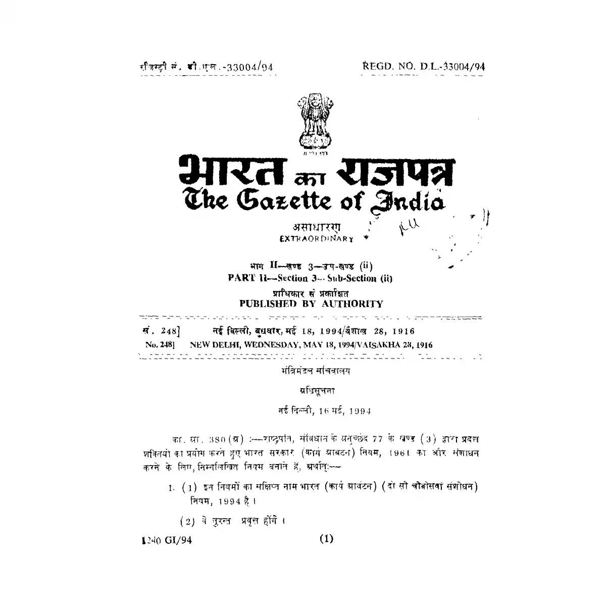
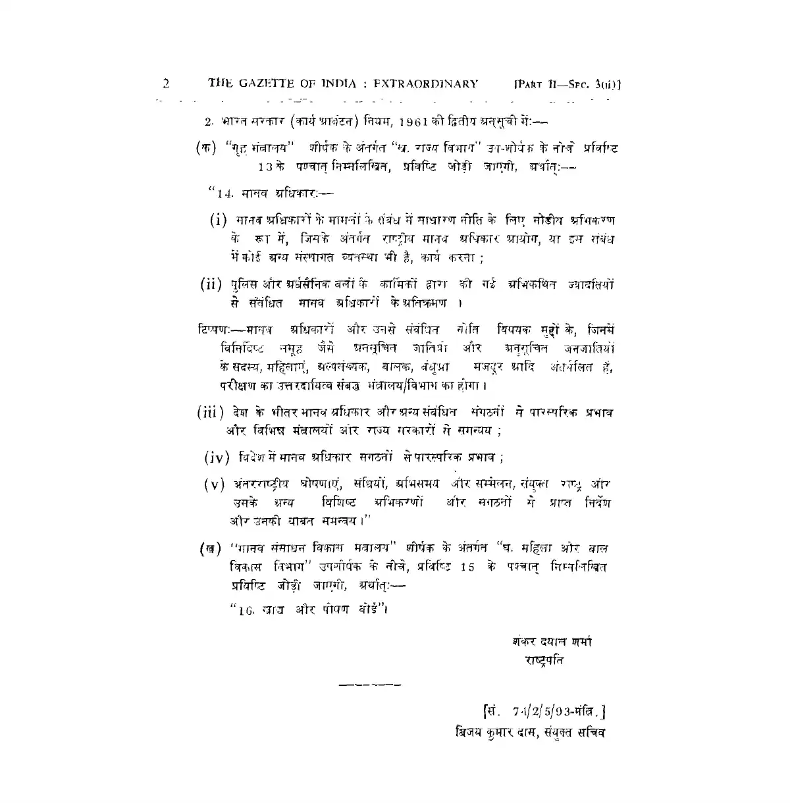
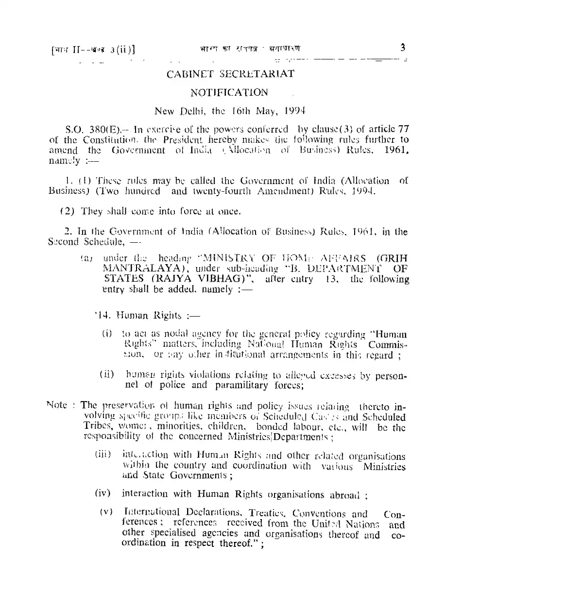
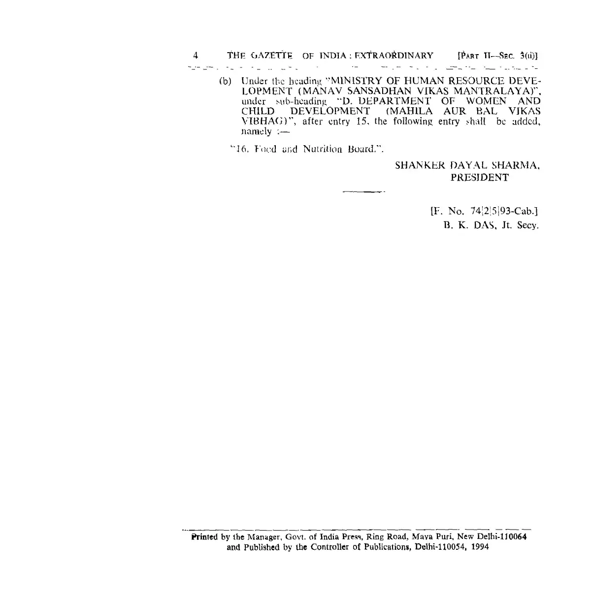

Amendment #224 (S.O. 380(E), 1994)
2 changes: 0 to the First Schedule, 2 to the Second Schedule. 1 applied1 not applied
The order, page by page
Page 1 of 4

Page 2 of 4

Page 3 of 4

1after Schedule 2 › MINISTRY OF HOME AFFAIRS › DEPARTMENT OF STATES › entry 13
- 14. Human Rights -
- i. to act as nodal agency for the general policy regarding "Human Rights" matters, including National Human Rights Commistion, or any other in fitutional arrangements in this regard
- ii. human rights violations relating to alleged excesses by personnel of police and paramilitary forces
- Note The preservation of human rights and policy issues relating thereto involving specific groups like members of Scheduled Castes and Scheduled Tribes, wome:, minorities, children, bonded labour, etc., will be the responsibility of the concerned Ministries Departments
- iii. inction with Human Rights and other related organisations within the country and coordination with various Ministries and State Governments
- iv. interaction with Human Rights organisations abroad
and 1 more
- v. International Declarations, Treaties, Conventions and Conferences references received from the United Nations and other specialised agencies and organisations thereof and Coordination in respect thereof.
not applied (the change could not be placed in the Rules as read; see How this document was read)
Page 4 of 4

2after Schedule 2 › MINISTRY OF HUMAN RESOURCE DEVE- LOPMENT › DEPARTMENT OF WOMEN AND CHILD DEVELOPMENT › entry 15
- 16. Food and Nutrition Board.
applied at schedule 2 › ministry MINISTRY OF HUMAN RESOURCE DEVELOP- MENT › department E › entry 16 in the Rules after #224
How this document was read
Known issues
| Change | Issue | Known as |
|---|---|---|
| 1 | change 1: no entry 13 under schedule 2 › ministry MINISTRY OF HOME AFFAIRS › department B | Entries not in the state |
From the Government of India (Allocation of Business) Rules, 1961 and their amendments, as published by the Cabinet Secretariat (cabsec.gov.in), read by orgpedia. The readings of the older scanned gazettes have known gaps.